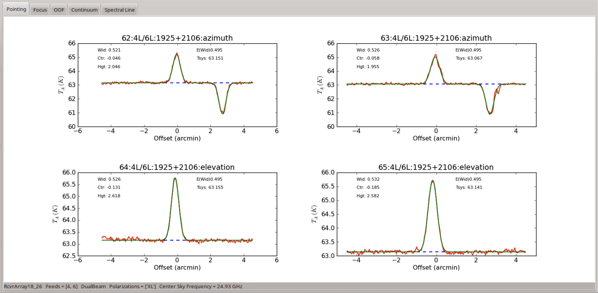
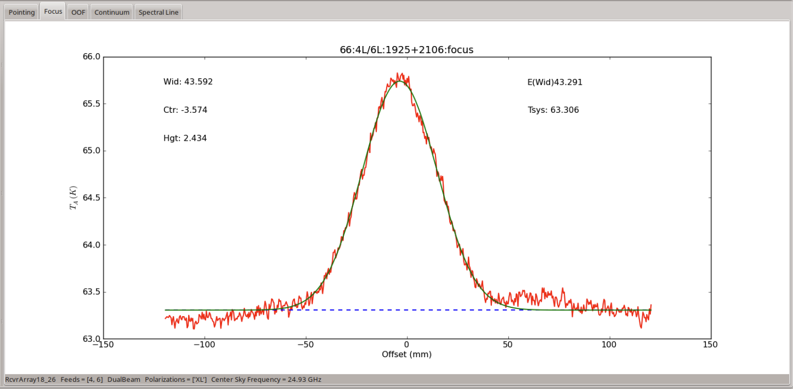
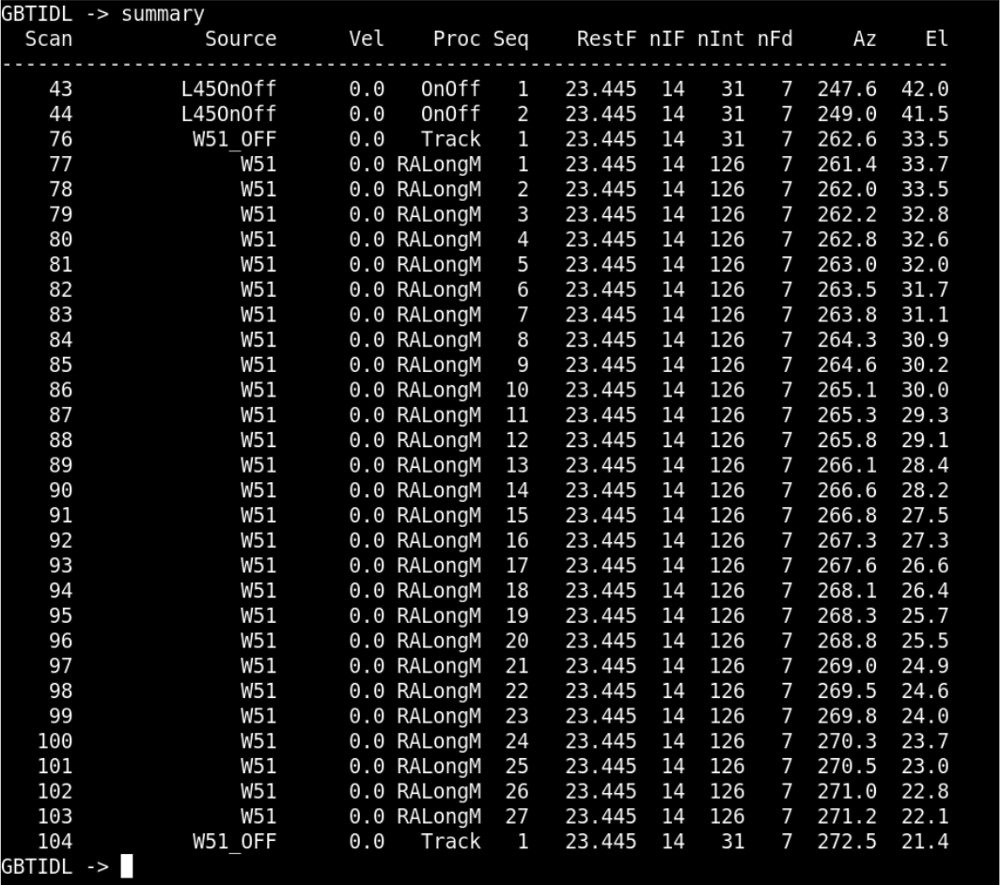

NH3 Mapping Observations with the K-Band Focal Plane Array (KFPA) on the GBT#
This tutorial walks you through the process of conducting a set of observations using the KFPA on the GBT. We will observe the first two inversion transitions of ammonia (J,K = 1, 1 and 2,2) towards the active star-forming region W51.
This tutorial assumes your scientific proposal has been accepted. It will then walk you through observational setup, observing, and data reduction providing a dataset ready for use in scientific analysis.
What you should already know
You need a GBO computing account. You should be relatively familiar with using the command line, and starting AstrID.
General instructions for using AstrID, as well as starting CLEO, contacting the operator, etc. are addressed at https://gbtdocs.readthedocs.io/en/latest/how-tos/general_guides/gbt_observing.html.
Data
The data we will be working with in this tutorial is taken from a set of observations of the RAMPS project. RAMPS observed a section of the Galactic Plane (40°>l>10°; b<|0.4°|) at frequencies including the ammonia (J,K = 1,1 and 2,2) inversion transition lines. These data are accessible at /home/scratch/lmorgan/Observer_Training/QuickGuides/KFPA/Data/RAMPS/RAMPS_W51.raw.vegas.
Starting Out#
Congratulations! Your scientific proposal to use the GBT has been accepted. You want to map the ammonia (J,K = 1,1 and 2,2) emission coming from the W51 active star-forming region. Now, your assigned project friend should reach out to you in plenty of time before the next observing semester starts to introduce themselves and offer any assistance that you may need in order to prepare for your observations. If you have not heard from your project friend yet and would like to take the initiative, you can find out who the project friend is either from your disposition notice (emailed out when your project is accepted) or by logging into the Dynamic Scheduling System (DSS) at dss.gb.nrao.edu. You will first need your NRAO proposal submission tool credentials to login.
Scripts and Configuration#
In order to perform observations with the GBT, you will write scripts using Python (currently v2.7). Normally, these scripts are written, saved and executed using the AstrID GUI. The full use and functionality of AstrID is covered elsewhere and will only be addressed here where it is specifically applicable to this particular project.
The first step we will follow in this guide is to establish general observing procedures. Scripts can then be constructed to carry out those procedures.
Calibration#
Good observing procedure in general is to first perform the necessary calibration scans for whatever set of observations is being undertaken, followed by the scientific observations themselves. When using the KFPA, what constitutes ‘necessary calibration’ is not always straightforward. For calibration with the KFPA, at minimum the observer should point and focus the telescope (multiple times if necessary) and (usually) take a reference spectrum that is known to have emission at the frequency of interest. In this case, W51 is both the source we wish to map, as well as a known source of molecular ammonia emission so that it can be used for calibration purposes. It may be that your main science objective is to search for spectral lines that are not already well established, or that the source you are planning to map is not already known to be a source of emission in any of the lines you plan to observe. In these cases, creating a separate configuration which will tune for a spectral line that has been previously observed and/or choosing a separate source known to be a source of a line that you are able to observe would be a reasonable choice.
Point and Focus Script#
First we construct a script that will point and focus the telescope using the KFPA receiver with the command ‘AutoPeakFocus()’.
1ResetConfig()
2
3config="""
4receiver = 'RcvrArray18_26'
5beam = 'All'
6obstype = 'Spectroscopy'
7backend = 'VEGAS'
8restfreq = 23694.5
9bandwidth = 23.44
10dopplertrackfreq = 23694.5
11nchan = 16384
12swmode = 'tp'
13swtype = 'none'
14swper = 1.0
15tint = 1.0
16vlow = 0
17vhigh = 0
18vframe = 'lsrk'
19vdef = 'Radio'
20noisecal = 'lo'
21pol = 'Circular'
22"""
23
24Configure(config)
25
26W51Source = Location('Galactic', 49.445, -0.35)
27AutoPeakFocus(source=None, location=W51Source)
28
- The individual components of this script are
ResetConfig()– This command resets the configuration tool values to their defaults and helps to avoid carrying over any settings that the previous GBT observer may have made.config = ""– This configuration string, labelledconfigis a set of parameters with their desired values that tell the system how you want to set up your observations. This will be covered in more detail shortly.Configure(config)– This command passes the parameter settings in the configuration string to the system itself and sets them. Strictly speaking, it is not necessary to configure the telescope before performing anAutoPeakFocus(), as this command performs its own configuration. However, it can be useful to do so, to pre-empt potential issues, such as the wrong receiver (i.e. the receiver that was being used by the previous observer) being selected for observations by mistake.W51Source = Location('Galactic', 49.445, -0.35)– This defines the string ‘W51’ as aLocation object, which contains the sky coordinates of the source to be observed. This could alternatively be read via aCatalog()function, or input in a different coordinate system.AutoPeakFocus()– For this example, note that the first argument passed toAutoPeakFocus()would be the actual source you want to perform the pointing/focus scans on. If you have a particular known source that you would like to use for this purpose, it can be supplied to the command using a catalog source orLocation object <astrid_commands.Location(), similarly to the ‘W51Source object’. For most observers, the actual source used for this purpose is unimportant, so long as the pointing/focus scans are successful and sensible. In this case, we supply ‘None’ as the first argument so thatAutoPeakFocus()will search for a source automatically. The second argument passed toAutoPeakFocus()is the location of the center point of the circle that it will use to search for a valid nearby pointing source. The defaults are that AutoPeakFocus will search for a source of at least 1.0 Jy within a radius of 10 degrees. If it is unable to find one, it will query the user on what they would like to do.
Spectral Line Calibration Observation Script#
Now that we have a pointing/focus script that will place the GBT itself in a good state for science observations, we similarly want to ensure that the backend system is also operating correctly.
1config="""
2receiver = 'RcvrArray18_26'
3beam = 'All'
4obstype = 'Spectroscopy'
5backend = 'VEGAS'
6restfreq = 23694.5, 23722.63
7bandwidth = 23.44
8dopplertrackfreq = 23694.5
9nchan = 16384
10swmode = 'tp'
11swtype = 'none'
12swper = 1.0
13tint = 1.0
14vlow = 0
15vhigh = 0
16vframe = 'lsrk'
17vdef = 'Radio'
18noisecal = 'lo'
19pol = 'Circular'
20"""
21
22Configure(config)
23
24W51Peak = Location('Galactic', 49.483, -0.358)
25W51Off = Location('Galactic', 49.483, 0.642)
26
27Slew(W51Off)
28Balance()
29OnOff(location=W51Peak,
30 referenceOffset=W51Off,
31 scanDuration=30.0,
32 beamName='1')
Note
There is no ResetConfig() command in this script - the only system settings that may have changed since running this for our Peak and focus script were made within that script and so are known to us.
- The following commands in the script are
config=""– As we are now planning to use the configuration as defined by this string, it is worthwhile to step through the relevant settings. The parameters particularly relevant to the observations in this guide are described.receiver = 'RcvrArray18_26'– Defines the receiver to be used.'RcvrArray18_26'is the string used to identify the KFPA in the GBT system.beam = 'All'– The KFPA comprises seven usable beams, this parameter tells the system which of these seven beams we wish to collect data from.restfreq = 23694.0, 23722.63– The rest frequency or frequencies to be observed. This may be a list or defined as a dictionary. The potential range of inputs for this parameter is very large (and especially so for the KFPA) and can be complicated. Please seek assistance from GBT staff for spectral setups using the KFPA.
Configure(config)– Passes the configuration settings to the system.W51Peak = Location('Galactic', 49.483, -0.358)– This is a slightly different sky position to the one defined asW51Sourcein the peak and focus script. ThisW51Peakposition is the brightest point of the source in ammonia emission we will be mapping.W51Off = Location('Galactic, 49.483, 0.642)– This is the position to be used as the reference point for our position-switched observations. For spectral line observations where emission is not expected to be particularly widespread, it is common to simply use an offset of 1 degree, though care should be taken to ensure that this is emission-free.Slew()– This command moves the telescope to the commanded position.Balance()– This command adjusts power settings along the signal pathway to ensure that the system is operating within its optimal response regime for the given inputs. Note that we are balancing here while the telescope is pointed at our reference position. This is to ensure that most contributions to the system temperature (e.g. the atmospheric contribution, a function of elevation) will be similar to our actual observations while, when actually observing our source, we are adding power to the balanced level. Alternatively, we might balance while pointed at the source itself. However, in this case, we expect the source to be quite bright and so contribute significantly to the overall system temperature. By balancing ‘on-source’, we run the risk of ‘underpowering’ the system when moving to our reference position. Severe differences in these levels will have impacts on data quality and should be avoided.OnOff()– This command performs the position-switched observation itself on the provided sky position, using the defined offset as the reference position. Note that we are explicitly using parameter names in this command (e.g.location=W51Peak) while this is not strictly required. Users familiar with writing Astrid scripts may prefer to omit these labels. However, we are including them in this guide for clarity.
Mapping#
Assuming that the pointing/focus and spectral line reference observations proceed without issue, we will then want to proceed to our actual mapping observation. There are many different possible approaches to mapping with the GBT, each with different benefits and drawbacks. The approach followed here is to perform a long scan on a reference position, followed by the map itself, followed by another long scan on the same reference position. When deciding what procedure you should follow for your own projects, you should determine whether this would be a good scheme for your scientific goals. In this case, each integration of the map is essentially treated as a single position-switched observation. The benefit of this is that each integration has a large factor of ‘off’ time compared to the ‘on’ time and so signal-to-noise ratios will be improved. A drawback here is that, if the map takes too long to observe, then atmospheric conditions (which are often particularly significant in K-Band observations) may change significantly over the time it takes to complete the map and the ‘on’ and ‘off’ phases of parts of the map may not be well-matched in terms of their non-source system temperature contributions. If superior flux-calibration accuracy is important for your experiment, then it may be better for you to perform a ‘RALongMapWithReference’, which performs an ‘off’ observation every N rows or for you to use frequency-switching when mapping. GBO staff will be happy to advise you on these issues.
The following script shows the procedure to perform the actual science observations of this project.
1config="""
2receiver = 'RcvrArray18_26'
3beam = 'All'
4obstype = 'Spectroscopy'
5backend = 'VEGAS'
6restfreq = 23694.5, 23722.63
7bandwidth = 23.44
8dopplertrackfreq = 23694.5
9nchan = 16384
10swmode = 'tp'
11swtype = 'none'
12swper = 0.417
13tint = 0.834
14vlow = 0
15vhigh = 0
16vframe = 'lsrk'
17vdef = 'Radio'
18noisecal = 'lo'
19pol = 'Circular'
20"""
21
22Configure(config)
23
24W51Source = Location('Galactic', 49.445, -0.35)
25W51Off = Location('Galactic', 49.483, 0.642)
26
27Slew(W51Off)
28Balance()
29
30Track(location=W51Off,
31 endOffset=None,
32 scanDuration=30.0,
33 beamName='1')
34
35RALongMap(location=W51Source,
36 hlength=Offset('J2000', 15.6/60., 0.0, cosv=True),
37 vlength=Offset('J2000', 0.0, 12.48/60., cosv=True),
38 vDelta=Offset('J2000', 0.0, 12.91/3600., cosv=True),
39 scanDuration=120,
40 start=1,
41 stop=59)
42
43Track(location=W51Off,
44 endOffset=None,
45 scanDuration=30.0,
46 beamName='1')
- Most of the features here have already been described, with the following exceptions and additions:
config=""– A small change has been made to the swper and tint parameters in the configuration string. Previously, these were both set to 1.0 s. For mapping, these need to be set so that they are consistent with the scanning speed, such that the map will be fully sampled. The full determination of these parameters is something that would be done at the time of proposal writing but, by using the GBT Mapping Calculator, a basic mapping command is easily constructed. By supplying the desired map sizes, along with the integration time (per beam), the mapping calculator will provide an example AstrID command which will produce a map with those parameters. In this case, an integration time of 0.834 s is needed in order to prevent ‘beam-smearing’ as the telescope moves across the sky. In this example, we are using a ‘swper’ which is a factor of two smaller than the integration time, effectively allowing us redundancy in the collection of our data - collecting two samples of data per integration.W51Source = Location('Galactic', 49.445, -0.35)– Note that we have returned to our original source coodinates from the pointing/focus script, this location is the center position of our map, rather than the brightest point as we used in the spectral line reference script.Track– ATrackcommand follows the commanded position for the defined length of time, using the defined beam as the pointing center. This serves as our reference ‘off’ position, taken before the map, with an identicalTrackscan performed following the map. Care should be taken to NOT balance between the reference and source scans.RALongMap– The map we are taking has 59 rows which each take 120 s, totalling nearly two hours. This is at the upper end of how long one should observe at K-Band using the GBT without performing a pointing/focus observation. During stable conditions at night, this length of time may be acceptable. For daytime observations, observations which span dawn or dusk or less than ideal weather conditions, the map should be divided into blocks of no more than one hour, with pointing/focus scans performed in between. This is accomplished by, for example, taking thestart=1, stop=59inputs to our single mapping command and creating two new maps, the first havingstart=1, stop=29and the second havingstart=30, stop=59.
Observing#
To learn how to execute your observing scripts, please follow the GBT observations 101 guide. Here we show what would be expected to happen when carrying out the scripts described above.
Point and Focus Script#
Once this script is submitted, AstrID will reset all configuration parameters to their default values, configure for the provided configuration string and then search for an appropriate source near the target position. Once this is found, Astrid will perform four pointing scans, followed by a focus scan (assuming that there are no errors during this process). In the AstrID GUI the peak scans should resemble this
Note
The KFPA is a multi-beam receiver and, by default, uses data from two beams simultaneously to perform pointing scans. The two beams used for this are mounted on the telescope in a cross-elevation orientation, meaning that when azimuthal pointing scans are performed and the ‘reference’ scan is removed from the ‘source’ scan, a negative ‘dip’ will be seen in the power output. This leads to the distinctive appearance of azimuth pointing scans when using multi-beam receivers on the GBT.
The focus scan should look like this
Assuming that the pointing and focus observations complete satisfactorily, the derived corrections will be applied to the telescope and you may proceed. If there is a failure along the way, often the best course of action is to resubmit the script and try again. If there is a reason not to do this (e.g. there has been a more significant software or hardware failure) then the operator will advise you. If you are unable to complete the pointing/focus scans after two or three attempts then it is likely that there is a problem with your script, the GBT itself or another system.
- Some issues which have been encountered in the past include
Pointing source too weak: Astrid will try to find a pointing source which is bright enough to provide a good pointing solution. However, in some cases, the source Astrid finds is simply not bright enough. If you suspect that this is the case, you can provide ‘flux = 2.0’ as an argument to the AutoPeakFocus() command to force Astrid to find a pointing source that is at least 2 Jy in flux. At K-Band, this should be more than adequate to complete a good set of pointing/focus scans.
Trying to observe a source below the horizon: While it should not be possible to be scheduled at a time when your source is not visible in the sky, it has occasionally happened and can produce warnings/errors that are not completely obvious that this is what has happened. Please check the LST you are observing at against your source coordinates and make sure that you expect to be able to see your source.
If you do not see a reason for the failure of your pointing/focus observations, check with the operator and ask if they can see any obvious failures. While the operators are not responsible for guidance on your observations, they are familiar with the various telescope systems and will be able to identify any serious problems with the hardware. In the case that the operator can also not identify an obvious problem, it is time to call the on-call support scientist. The operator will know who this is at any given time and will be able to reach them. The on-call scientist will be able to advise you on how to proceed.
Spectral Line Calibration Observation Script#
After submitting this script, AstrID will set the commanded configuration parameters, slew to the commanded off position and balance the system there. Observers should watch the AstrID output carefully here. The power levels of VEGAS are considered to be in range if they are within 2 dB of -20 dB.
.. (where to find these values is covered under ‘VEGAS Monitoring Tools’ in the Observers Guide).
Outside of these values, the Balance() command may fail. There are also other balancing failures that Astrid will report. However, Astrid will not necessarily stop a scan because balancing has failed. This is by design as there are instruments which need to operate outside of the standard balanced power ranges. It is worth a reminder here that data quality is primarily the responsibility of the observer and you should be careful to monitor any and all error messages that are passed through the AstrID window in the ‘Log’ window. In the case that balancing errors are seen, the Balance() command should be re-issued. It is rare that a Balance() command fails multiple times in a row unless there is an issue with the configuration. If you fail to achieve reasonable balanced power levels after two or three attempts, you should contact the operator and ask for advice.
Assuming that the Balance() command has proceeded without issue, the spectral line script will continue to perform an OnOff() scan pair on the commanded position. This scan can be checked for data quality through the ‘online’ capability of GBTIDL.
To start the GBTIDL software, go to a terminal window on a Green Bank Linux Machine (titania or ariel ONLY if you are currently observing, another machine, if you are not observing), and type
gbtidl
How you can access your data depends on if you are currently observing or not.
online
offline, 'AGBT24A_000_01'
Once you have successfully connected to your dataset, you can look at some basic metadata via
summary
This will show you a collection of basic information about the scans you have taken.
Note
There are several things to note about this summary of information.
This summary does not contain peak and focus scans. This is because the data taken by each backend are written to a different file and here GBTIDL is reading only the VEGAS file.
You may notice that the source scan numbers do not match what might be expected. If our observations had been run as described, the peak and focus scans would account for scan numbers 1-5, with the OnOff spectral line calibration scans beginning with scan number 6. In fact, the example dataset being used here was originally part of a large survey strategy and so there are differences in this aspect of the observations. This also accounts for the fact that our OnOff spectral line calibration scans have actually been performed on the source ‘L45OnOff’.
We can now examine the data taken in our spectral line reference scan using GBTIDL commands.
getps, 43
This will return the reduced spectrum for the position-switched scan pair of scans 43 and 44.
Note
By default, getps will show you the data for fdnum=0 (i.e. beam 1), ifnum=0 (i.e. the first input rest frequency) and plnum=0 (i.e. the left-hand circularly polarized channel).
Todo
Show the resulting spectrum.
Note
In order to achieve a high signal-to-noise ratio for these data both polarizations have been averaged and the spectrum has been smoothed by 12 channels).
Todo
Add all commands required to achieve this.
The ammonia spectrum is clearly visible, which gives us confidence that our configuration, telescope pointing and power levels are all within reasonable limits. A final further assurance of the data quality of our observations can be found by noting the system temperature, given in the top right corner of the GBTIDL data plotter window. A ‘good’ range for the system temperature of the KFPA is ~30 - 45 K. Here we see that we have a system temperature of 35.0 K. This implies that everything is running smoothly and we have good observing conditions.
Mapping Script#
After submitting the mapping script, AstrID will set the commanded configuration, slew to the commanded ‘off’ position and balance the system. Following a successful balance, the off position will be observed via the Track command for 30 s. Then the RALongMap procedure will be followed until completion, at which point another 30 s track scan on the off position will be observed.
It is not always obvious how best to monitor data quality while mapping. Assuming that the ‘online’ mode of GBTIDL is being used, mapping scans will become accessible shortly after each scan row is completed, throughout the observing session. There is no standard capability provided for users to produce ‘quick look’ maps during the observing process. In order to determine the health of ongoing observations, users should continue to monitor the VEGAS power levels, as well as the system temperatures reported in CLEO and GBTIDL.
It is, of course, possible to examine the spectral data in near ‘real-time’ as data are collected. Running the command
getsigref, 78, 77
This will return a spectrum which has been processed with the first row of our map taken as the ‘on’ portion of a position-switched observation, using our actual ‘off’ for the reference portion. This will allow us to maintain a general overview of the data being collected (monitoring system temperature, etc). However, we are unlikely to see spectral line emission in most circumstances using this command. This is because the entire row of our map is being averaged for the ‘on’ position, which will result in low signal-to-noise, even if significant spectral line emission is present at some positions within that row. It is also possible to reduce spectra for individual integrations within a scan row. However, it is not necessarily straightforward to determine which integrations are likely to contain emission, even if the relevant sky coordinates are known.